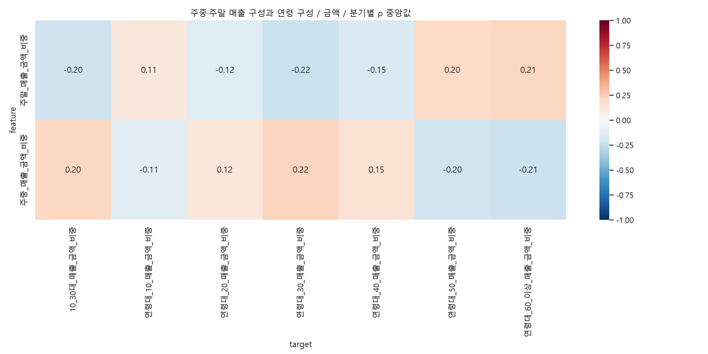
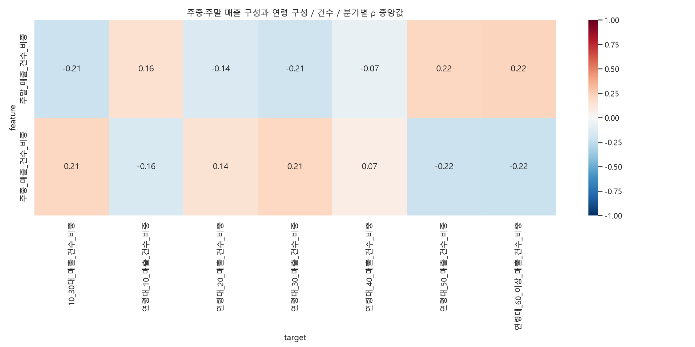

행정동 외식업의 분기별 지역 간 상관입니다. 연령×시간×요일 교차 자료가 아니므로 금·토 야간 소비자의 나이를 검증하지 않습니다. 젊은 층은 10·20·30대 매출 합산 비중이며 고유 소비자 수나 평균 나이가 아닙니다. 시간대 비중은 6개 시간대 합계, 주중주말 비중은 두 구분 합계, 연령 비중은 연령 확인 매출 합계가 분모입니다. 각 비중은 합계 제약을 가지며 주중·주말 관계는 서로 보완적이라 독립 증거가 아닙니다. 구간 길이와 주중/주말 일수 차이를 보정한 시간당·일평균 매출 비교는 아닙니다. 분기별 Spearman 중앙값은 통합 상관계수가 아니며 인과성·공간 의존성·상권 규모를 통제하지 않았습니다. 시간대 건수 원본은 시작 시각이 훼손된 컬럼명이라 종료 시각을 금액 구간과 대응했습니다. 건수 시간대 결과는 이 대응을 전제로 한 잠정 결과이며 time_column_mapping.csv를 확인하세요. 원본 결측은 0 대체하지 않고 관측 업종 중 결측이 있으면 합계도 제외했습니다. q값은 공간 의존성 미보정 참고값입니다.
| group | unit | feature | target | median_rho | min_rho | max_rho | quarters | min_n | max_n | positive | negative |
|---|---|---|---|---|---|---|---|---|---|---|---|
| weekday_weekend | 건수 | 주말_매출_건수_비중 | 10_30대_매출_건수_비중 | -0.211974 | -0.245129 | -0.140519 | 20 | 424 | 425 | 0.0 | 1.0 |
| weekday_weekend | 건수 | 주중_매출_건수_비중 | 10_30대_매출_건수_비중 | 0.211974 | 0.140519 | 0.245129 | 20 | 424 | 425 | 1.0 | 0.0 |
| weekday_weekend | 금액 | 주말_매출_금액_비중 | 10_30대_매출_금액_비중 | -0.203486 | -0.292895 | -0.133121 | 20 | 424 | 425 | 0.0 | 1.0 |
| weekday_weekend | 금액 | 주중_매출_금액_비중 | 10_30대_매출_금액_비중 | 0.203486 | 0.133121 | 0.292895 | 20 | 424 | 425 | 1.0 | 0.0 |


| group | unit | feature | target | median_rho | min_rho | max_rho | quarters | min_n | max_n | positive | negative |
|---|---|---|---|---|---|---|---|---|---|---|---|
| weekday_weekend | 건수 | 주말_매출_건수_비중 | 10_30대_매출_건수_비중 | -0.211974 | -0.245129 | -0.140519 | 20 | 424 | 425 | 0.00 | 1.00 |
| weekday_weekend | 건수 | 주말_매출_건수_비중 | 연령대_10_매출_건수_비중 | 0.162686 | 0.119358 | 0.248177 | 20 | 424 | 425 | 1.00 | 0.00 |
| weekday_weekend | 건수 | 주말_매출_건수_비중 | 연령대_20_매출_건수_비중 | -0.141128 | -0.179620 | -0.052689 | 20 | 424 | 425 | 0.00 | 1.00 |
| weekday_weekend | 건수 | 주말_매출_건수_비중 | 연령대_30_매출_건수_비중 | -0.210553 | -0.320877 | -0.165875 | 20 | 424 | 425 | 0.00 | 1.00 |
| weekday_weekend | 건수 | 주말_매출_건수_비중 | 연령대_40_매출_건수_비중 | -0.071732 | -0.162227 | 0.002466 | 20 | 424 | 425 | 0.05 | 0.95 |
| weekday_weekend | 건수 | 주말_매출_건수_비중 | 연령대_50_매출_건수_비중 | 0.215338 | 0.141887 | 0.287081 | 20 | 424 | 425 | 1.00 | 0.00 |
| weekday_weekend | 건수 | 주말_매출_건수_비중 | 연령대_60_이상_매출_건수_비중 | 0.222732 | 0.174063 | 0.249219 | 20 | 424 | 425 | 1.00 | 0.00 |
| weekday_weekend | 건수 | 주중_매출_건수_비중 | 10_30대_매출_건수_비중 | 0.211974 | 0.140519 | 0.245129 | 20 | 424 | 425 | 1.00 | 0.00 |
| weekday_weekend | 건수 | 주중_매출_건수_비중 | 연령대_10_매출_건수_비중 | -0.162686 | -0.248177 | -0.119358 | 20 | 424 | 425 | 0.00 | 1.00 |
| weekday_weekend | 건수 | 주중_매출_건수_비중 | 연령대_20_매출_건수_비중 | 0.141128 | 0.052689 | 0.179620 | 20 | 424 | 425 | 1.00 | 0.00 |
| weekday_weekend | 건수 | 주중_매출_건수_비중 | 연령대_30_매출_건수_비중 | 0.210553 | 0.165875 | 0.320877 | 20 | 424 | 425 | 1.00 | 0.00 |
| weekday_weekend | 건수 | 주중_매출_건수_비중 | 연령대_40_매출_건수_비중 | 0.071732 | -0.002466 | 0.162227 | 20 | 424 | 425 | 0.95 | 0.05 |
| weekday_weekend | 건수 | 주중_매출_건수_비중 | 연령대_50_매출_건수_비중 | -0.215338 | -0.287081 | -0.141887 | 20 | 424 | 425 | 0.00 | 1.00 |
| weekday_weekend | 건수 | 주중_매출_건수_비중 | 연령대_60_이상_매출_건수_비중 | -0.222732 | -0.249219 | -0.174063 | 20 | 424 | 425 | 0.00 | 1.00 |
| weekday_weekend | 금액 | 주말_매출_금액_비중 | 10_30대_매출_금액_비중 | -0.203486 | -0.292895 | -0.133121 | 20 | 424 | 425 | 0.00 | 1.00 |
| weekday_weekend | 금액 | 주말_매출_금액_비중 | 연령대_10_매출_금액_비중 | 0.111102 | 0.083763 | 0.189707 | 20 | 424 | 425 | 1.00 | 0.00 |
| weekday_weekend | 금액 | 주말_매출_금액_비중 | 연령대_20_매출_금액_비중 | -0.123790 | -0.218559 | -0.060616 | 20 | 424 | 425 | 0.00 | 1.00 |
| weekday_weekend | 금액 | 주말_매출_금액_비중 | 연령대_30_매출_금액_비중 | -0.220459 | -0.359901 | -0.167106 | 20 | 424 | 425 | 0.00 | 1.00 |
| weekday_weekend | 금액 | 주말_매출_금액_비중 | 연령대_40_매출_금액_비중 | -0.149163 | -0.236231 | -0.032870 | 20 | 424 | 425 | 0.00 | 1.00 |
| weekday_weekend | 금액 | 주말_매출_금액_비중 | 연령대_50_매출_금액_비중 | 0.203017 | 0.151371 | 0.322611 | 20 | 424 | 425 | 1.00 | 0.00 |
| weekday_weekend | 금액 | 주말_매출_금액_비중 | 연령대_60_이상_매출_금액_비중 | 0.212683 | 0.184859 | 0.292903 | 20 | 424 | 425 | 1.00 | 0.00 |
| weekday_weekend | 금액 | 주중_매출_금액_비중 | 10_30대_매출_금액_비중 | 0.203486 | 0.133121 | 0.292895 | 20 | 424 | 425 | 1.00 | 0.00 |
| weekday_weekend | 금액 | 주중_매출_금액_비중 | 연령대_10_매출_금액_비중 | -0.111102 | -0.189707 | -0.083763 | 20 | 424 | 425 | 0.00 | 1.00 |
| weekday_weekend | 금액 | 주중_매출_금액_비중 | 연령대_20_매출_금액_비중 | 0.123790 | 0.060616 | 0.218559 | 20 | 424 | 425 | 1.00 | 0.00 |
| weekday_weekend | 금액 | 주중_매출_금액_비중 | 연령대_30_매출_금액_비중 | 0.220459 | 0.167106 | 0.359901 | 20 | 424 | 425 | 1.00 | 0.00 |
| weekday_weekend | 금액 | 주중_매출_금액_비중 | 연령대_40_매출_금액_비중 | 0.149163 | 0.032870 | 0.236231 | 20 | 424 | 425 | 1.00 | 0.00 |
| weekday_weekend | 금액 | 주중_매출_금액_비중 | 연령대_50_매출_금액_비중 | -0.203017 | -0.322611 | -0.151371 | 20 | 424 | 425 | 0.00 | 1.00 |
| weekday_weekend | 금액 | 주중_매출_금액_비중 | 연령대_60_이상_매출_금액_비중 | -0.212683 | -0.292903 | -0.184859 | 20 | 424 | 425 | 0.00 | 1.00 |